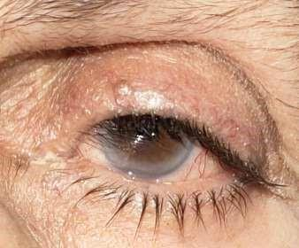

Part I · Chalazion
Differential diagnosis and treatment
Differential diagnosis
- Adenoma and adenocarcinoma of the Meibomian gland.
- Sebaceous cyst.
- Tuberculoma & gumma.
Treatment
- Small chalazion: may be left alone with follow up.
- Large chalazion: incision (cruciate or vertical) and curettage or scraping of its contents from the conjunctival side.
- Infected chalazion: as hordeolum internum.
- Recurrent swelling in the same gland: excision biopsy and histopathological examination to exclude malignancy.
N.B. Intralesional injection of 0.1 ml steroids may resolve the chalazion.
